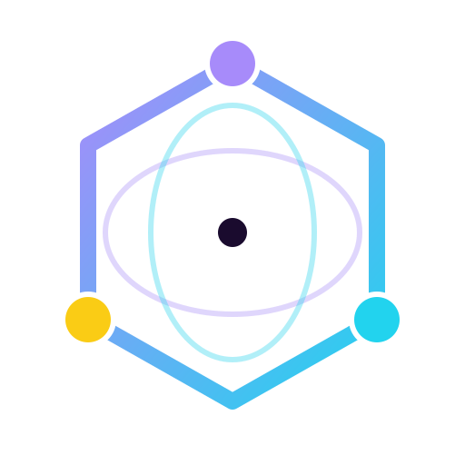

NetDebugger
跟随系统
浅色
深色
─
□
✕

NetDebugger
选择一个连接开始调试
客户端:
×
方向
全部
接收
发送
类型
全部
文本
二进制
系统
字节大小
-
正则
JSONPath
清除
总计 0
|
0 · 0 B
0 · 0 B
|
0 msg/s · 0 KB/s
|
峰值 0 msg/s · 0 KB/s
峰值 0 msg/s · 0 KB/s
全选
已选 0
退出选择
目标:
发送格式:
文本
Hex
Base64
新建分组
取消
确定
新建连接
名称:
分组:
协议:
WebSocket
角色:
服务端
客户端
监听端口:
Endpoint 路径（留空则接受所有路径）
添加
目标地址:
Endpoint 路径:
自动重连（秒）:
自动心跳（秒）:
自定义请求头（握手时发送）
添加
Subprotocol（Sec-WebSocket-Protocol）
添加
取消
确定
通用
快捷键
关于
通用设置
关闭后最小化到系统托盘
快捷键设置
发送消息
Enter
Ctrl+Enter
关于
NetDebugger
版本
-
作者
zz
跨平台网络协议调试器，当前以 WebSocket 调试为主。支持 WS 服务端/客户端模拟、多 endpoint 路径路由、消息时间线、消息搜索与高亮、按 endpoint 未读角标、消息历史持久化等功能。
检查更新
确认关闭
确定要关闭程序吗？
关闭后最小化到系统托盘
取消
确认关闭
取消
确定
确定停止该连接吗？
取消
停止
取消
确定
自动回复规则（仅服务端，命中首条自动回复）
新增
启用
匹配类型
匹配内容
回复类型
回复内容
延迟ms
操作
暂无规则，请点击新增
取消
保存
新增规则
匹配类型:
包含
精确
正则
匹配内容:
回复类型:
文本
Hex
Base64
回复内容:
延迟(ms):
取消
确定
保存快捷指令
名称:
内容:
取消
保存
选择导出格式
文本
JSON
取消
关闭
更新
消息对比
✕
关闭
交换
批量 / 压测发送
次数
间隔 (ms)
取消
开始
停止
已收藏
✕
✕
暂无收藏
无匹配结果
关闭
收藏预览
✕
关闭